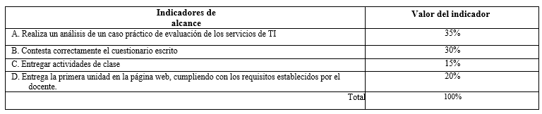
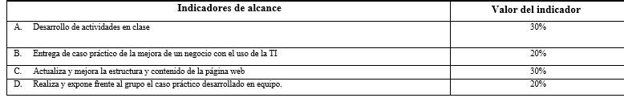
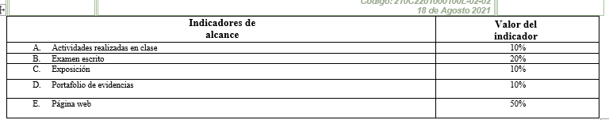

Esta asignatura responde al entorno de globalidad y competitividad marcado por la Tecnología de Información y Comunicación (TIC), puesto que las organizaciones en general, sin importar su tamaño y actividad, son cada vez más dependientes de la TIC tanto para soportar y mejorar sus procesos de negocio como para cumplir con las necesidades de los clientes y de la propia organización.
Fundamentos de Gestión de Servicios de Tecnologías de Información (TI) otorga al estudiante la capacidad de visualizar la importancia de la alineación estratégica de TI con las estrategias de negocio y la incorporación de marcos de referencia en la gestión de servicios de TI. Al finalizar el curso el estudiante conoce y comprende cómo está organizada la empresa, distingue sus procesos estratégicos y como la TI le da valor agregado tanto al cliente como a la empresa, máxime cuando tiene implementado un marco de referencia que garantiza su calidad en el servicio. Además observa como un proyecto de software puede convertirse en un servicio de TI.

• Formula, desarrolla y gestiona el desarrollo de proyectos de software para incrementar la competitividad
en las organizaciones, considerando las normas de calidad vigentes.
• Aplica herramientas computacionales actuales y emergentes para optimizar los procesos en las
organizaciones.
• Realiza consultorías relacionadas con la función informática para la mejora continua de la organización.
• Participa y dirige grupos de trabajo interdisciplinarios, para el desarrollo de proyectos que requieran
soluciones innovadoras basadas en tecnologías y sistemas de información.
Primer corte
Segundo corte
Tercer corte
Una disciplina que estudia la integración de varias ingenierías tales como la eléctrica, telecomunicaciones, electrónica, para el desarrollo de soluciones integrales de cómputo y comunicaciones (software o hardware), con el fin de procesar información de forma automática.En otras palabras, la ingeniería informática te proporciona los conocimientos teóricos y prácticos de programación, redes, sistemas distribuidos, bases de datos, inteligencia artificial, entre otros.
Para ser más específicos, dentro de las tareas habituales en las que participan ingenieros informáticos están escribir software y firmware, crear chips, crear sensores analógicos, diseñar placas de circuitos de y diseñar sistemas operativos, aplicaciones telefónicas, realizar soporte a los equipos de cómputo e integrar equipos o dispositivos de hardware para soluciones.